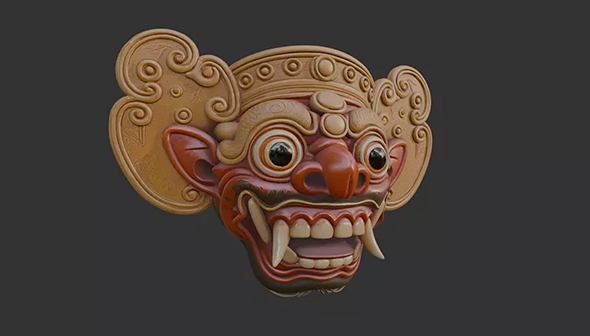
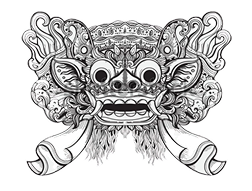

Explore Balinese Tapel By Trying Our 3D Filter.
Feature
What is Tapel?
The word Tapel refers to a mask, especially in the context of Barong, Rangda, and other sacred performance masks.
A tapel especially for Barong or Rangda is considered sacred (keramat). It is kept in a shrine, blessed, and a only in rituals or special performances.
Before a tapel is used, priests perform a ceremony called melaspas to “give life” to the mask. Some masks are believed to have spiritual presence and must be treated with respect.